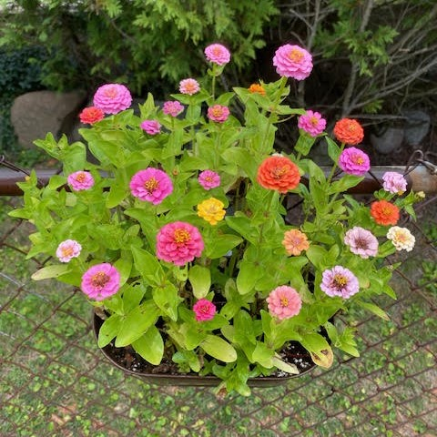
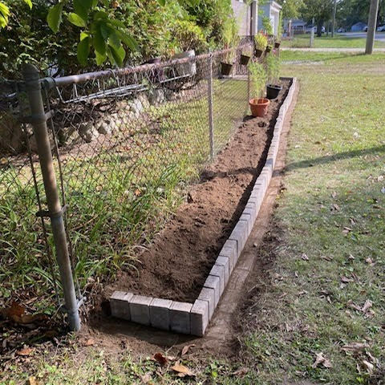
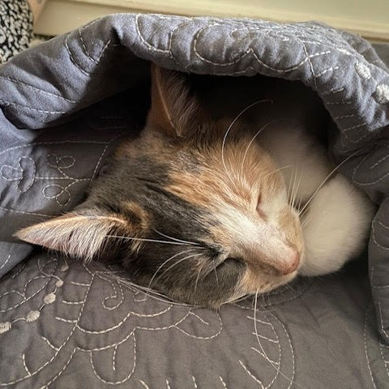

My Blog
Learning to Garden
Over the last few years I have been experienmenting & learning how to grow different plants. I bought some outdoor planters last spring and sowed my first seeds. I watched as Cosmos, Royal Carpet, and Zinnias sprouted and grew into beautiful blooms. They all lasted way longer into the fall season than I expected. I can't wait to see how it turns out next year! I plan to plant many more Cosmos since they worked so well. I'm also going to attempt to grow a few varieties of Dahlias. After this next season I'll have a better idea of what works best.
Home Projects
I was lucky enough to buy a home in 2021 and have been slowly making improvements and personal touches as time & money allow. Most recently I installed a garden bed outside to allow me to continue my gardening journey. I was able to be pretty frugal in my attempts since a friend of mine was gifted many patio bricks that they did not have a use for. As long as I agreed to pick them up and take them away - I could have as many as I wanted. 😊 I love how it turned out and cannot wait to fill it with flowers this coming spring.
Roommates
I have had multiple roomates in my years, these days all of mine have paws instead of feet. I have a Tortishell cat named Phoenix who is 19 years old. She has been with me thru many moves and life events. When I got my house it was just the two of us for a year or so before a friend of mine who fosters kittens convinced me to adopt one (which turned into taking home two sisters). Stella & Luna will be turning 2 years old in early 2024. Stella is a dilute Calico and Luna is a fluffy black cat. They bring lots of laughter, love, and cuddles to my life.
My Home Town
Garden City, Michigan
Nestled in Wayne County, Garden City is a welcoming suburb offering a blend of small-town charm and modern conveniences. Known for its lush green spaces, family-friendly neighborhoods, and a strong sense of community, Garden City provides a peaceful haven just a short drive from Detroit. Residents enjoy well-maintained parks, local events, and a variety of amenities that make Garden City a delightful place to call home.